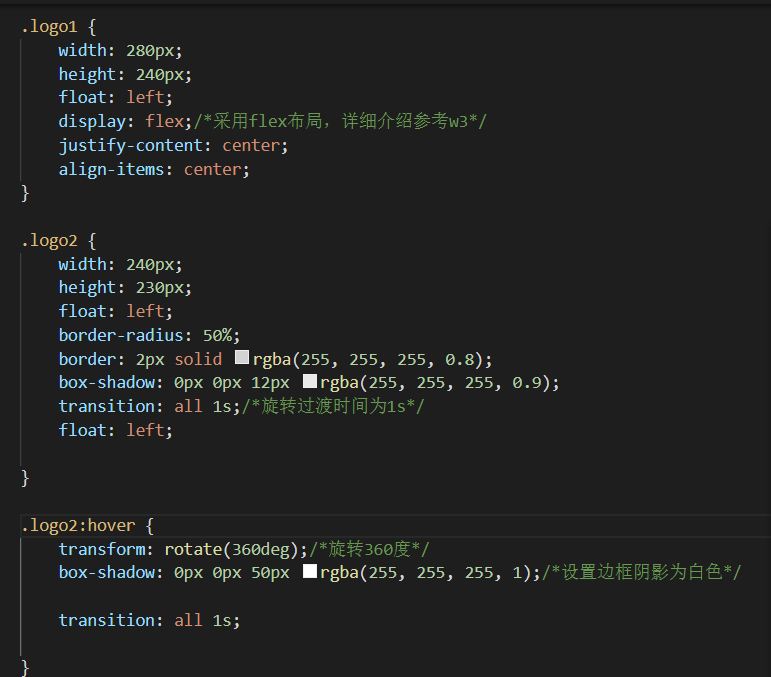

其他效果
1 box-shadow
1.1 offeset-x
box-shadow属性最多由五个部分构成，offset-x offeset-y blur spread color-position构成 他的属性是连带一起的而不是分散的，第一个属性是指明了阴影水平方向的偏移，就是在x轴的阴影的 属性
1.2 offeset-y
offeset-y同offeset-x类似，一个是往x轴偏移，一个是往y轴偏移，正数代表阴影在元素下方，负数反之
1.3 blur&spread&color
blur 和spread和color分别是阴影模糊半径以及阴影扩展半径最后一个就是颜色了
2 头像圆框旋转
2.1 圆框设计
border-radius表示div的弧形边框效果，具体代码书写是border-radius:(填写范围);
2.2 圆框旋转

重点在于transfrom的rorate旋转360deg，transition表示过渡时间也就是旋转所需要的动画时间为1s